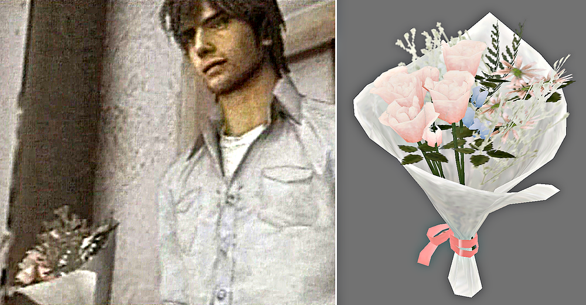
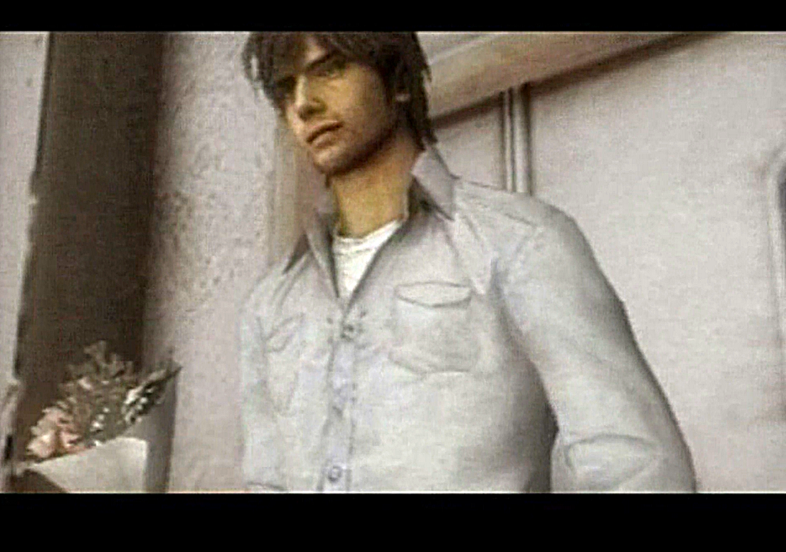
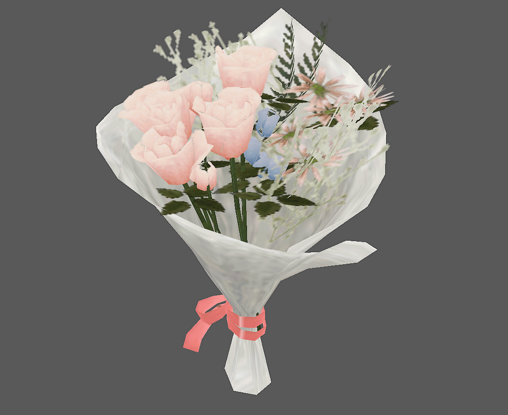
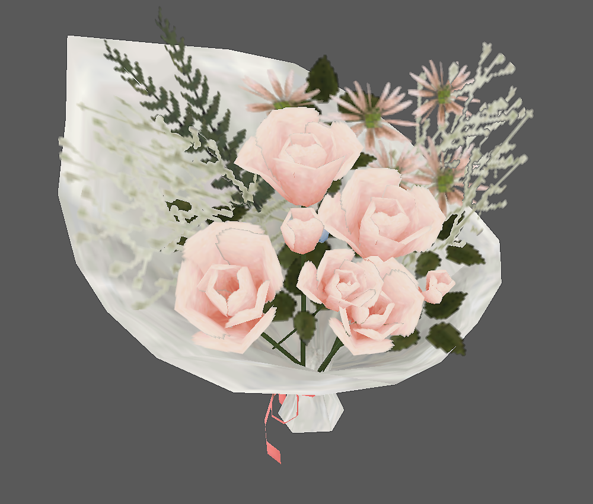
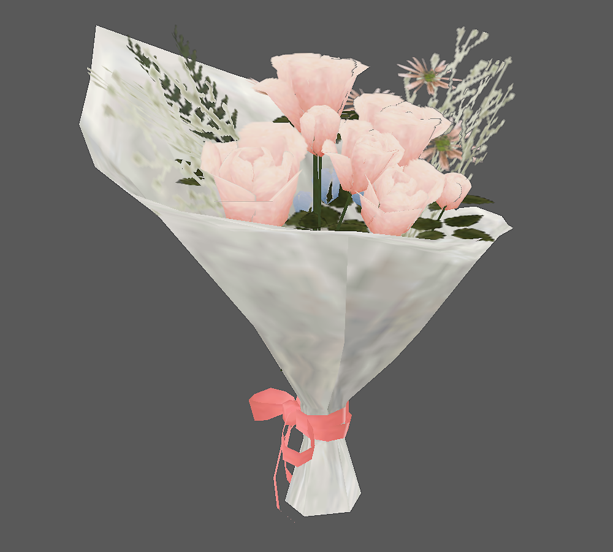
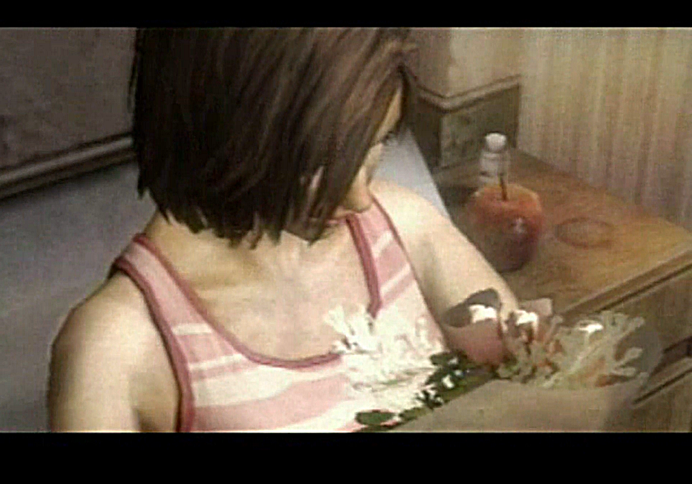
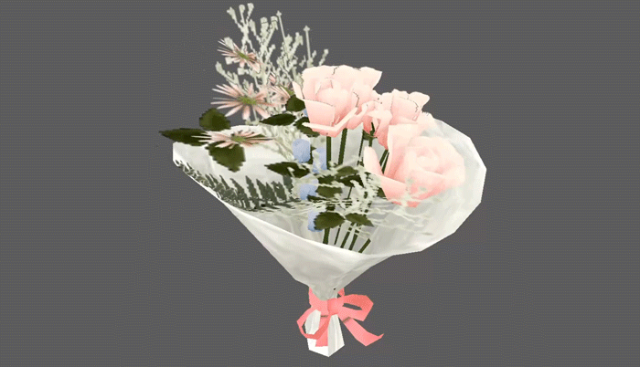

[SH4] Henry's Bouquet

A Look at the Bouquet Henry Brought to the Hospital💐
![[SH4] Henry's Bouquet](img/da15.png)
This is a mirror of the DeviantArt version linked above, provided as a backup and for easier access.

This is info I want to share with all his fans! And this time, I'm completely melting too.

In the two endings, "Escape" and "Mother," Henry brought a bouquet of flowers to Eileen's hospital room. You probably want to know what kind of flowers they were, right? So I just checked them directly in the game data. It's just a texture, so no depth or detail though.

Ka… kawaii… It might just be matched to Eileen's outfit, but this pale pink, white, and blue combo is just too cute. So romantic. The bouquet is so adorable that I can't handle it.


And Henry chose this bouquet soon after being beaten up and exhausted from fighting creatures and ghosts. Even at a time like that, choosing these flowers for her… He's pure.

It's so cute that you wouldn't expect it to be a small prop from the Silent Hill series! Huge thanks to the person who designed this bouquet! Just seeing him walk in for the visit with this bouquet is too cute—I'm dying.

By the way, the old viewer I used wasn't working well, so I made the GIF with another viewer that great @roocker666 recommended. Now you can see his bouquet from every angle, 360 degrees. Aww! it's just too cute. Honestly, all I can say is "cute"… my vocabulary fails me.
(File name: di73.bin)
Thanks to;
- Noesis
- alanm20/SH4_map_bin_PC
- alanm20/SH4_bone_mesh_bin_PC
- @roocker666